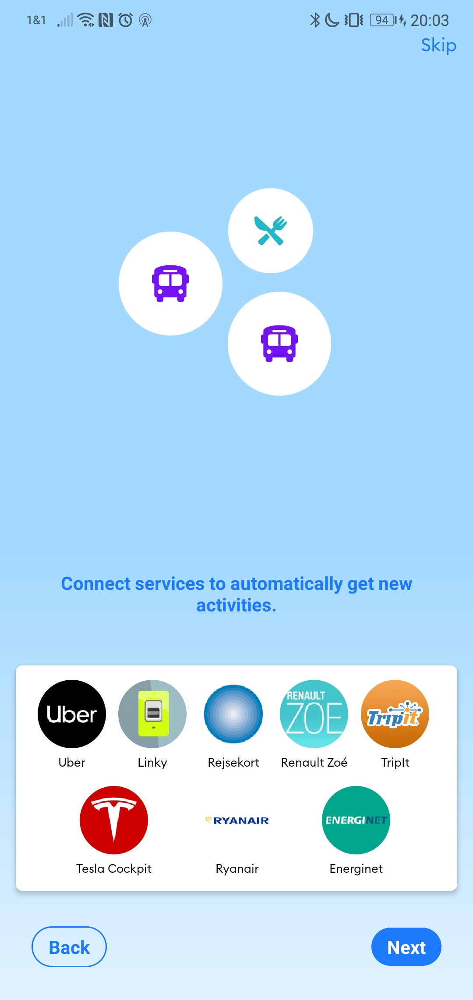

2020-10-21
Timeline
Home 
Rewards 
Account erstellen: Man macht vorher den CO2-Fußabdruck und muss dann einen Account erstellen um den zu sehen
Illustrationen werten die App optisch auf, kosten aber auch viel Platz
Die App trackt CO2-Einsparungen 
Ein Welcomescreen hat noch nie geschadet 
Ein Account ist optional
Die Offset-Seite sieht schick aus, zwingt mein Handy aber in die Knie
Viel Farbe lässt die App weniger standard aussehen
Kleinere Layoutprobleme
Tägliche Aktivitäten sollen routine bringen
Die App vergibt Punkte für jede gemachte aktivität 
Die CO2-Ersparnis zählt bei mir nicht mit 
Der Barcode-Scanner ist die einzigartigste Funktion der App 
Die Startseite hat eine Formatfüllende Grafik
Der Fußabdrucksrechner ist übersichtilich
Der Winkel ist manchmal etwas im Weg
Die Challenges reagieren nicht auf den CO2-Fußabdruck 
Ein Splashscreen mit Info-Blurb gehört dazu, hier ist aber doch sehr wenig info drauf 
Die App verbindet sich mit vielen 3rd-party Diensten 
So sieht die App nach der Einführung aus 
Einzelne Aktivitäten darstellung 
Etwas gefülltere Ansicht 
Die Statistiken sind etwas gewöhnungsbedürftig